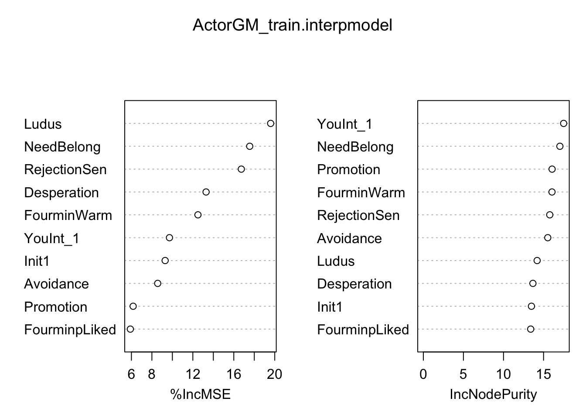
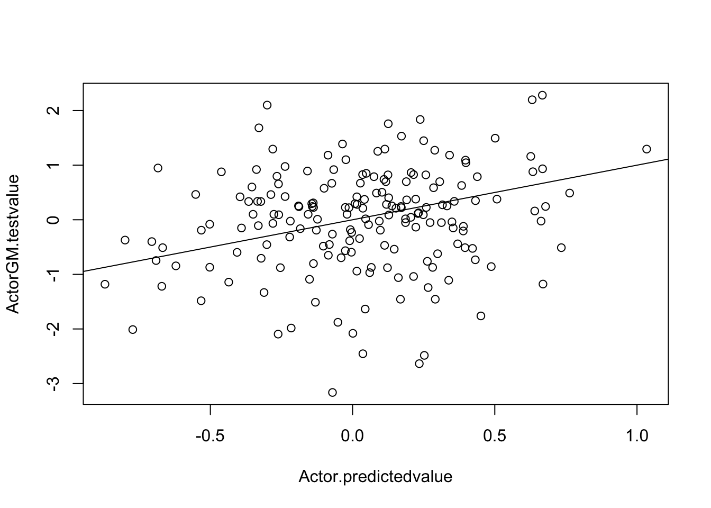
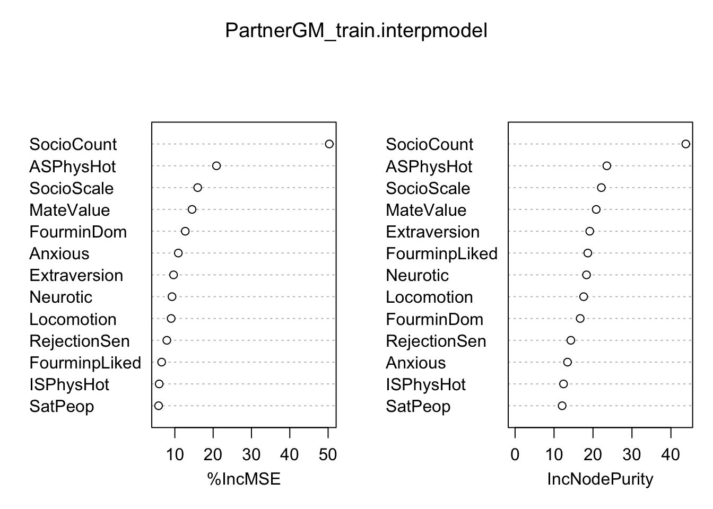
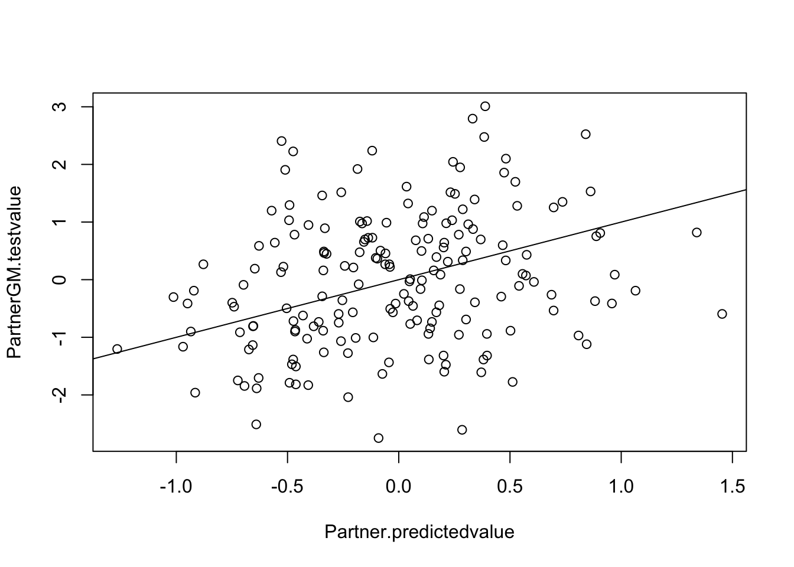
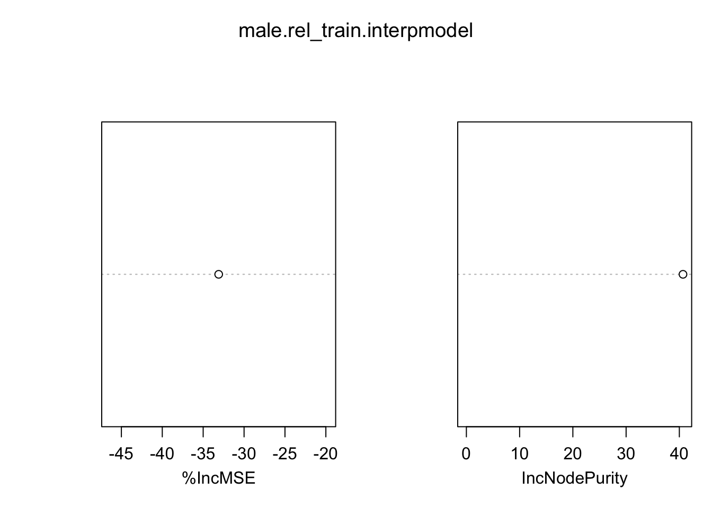
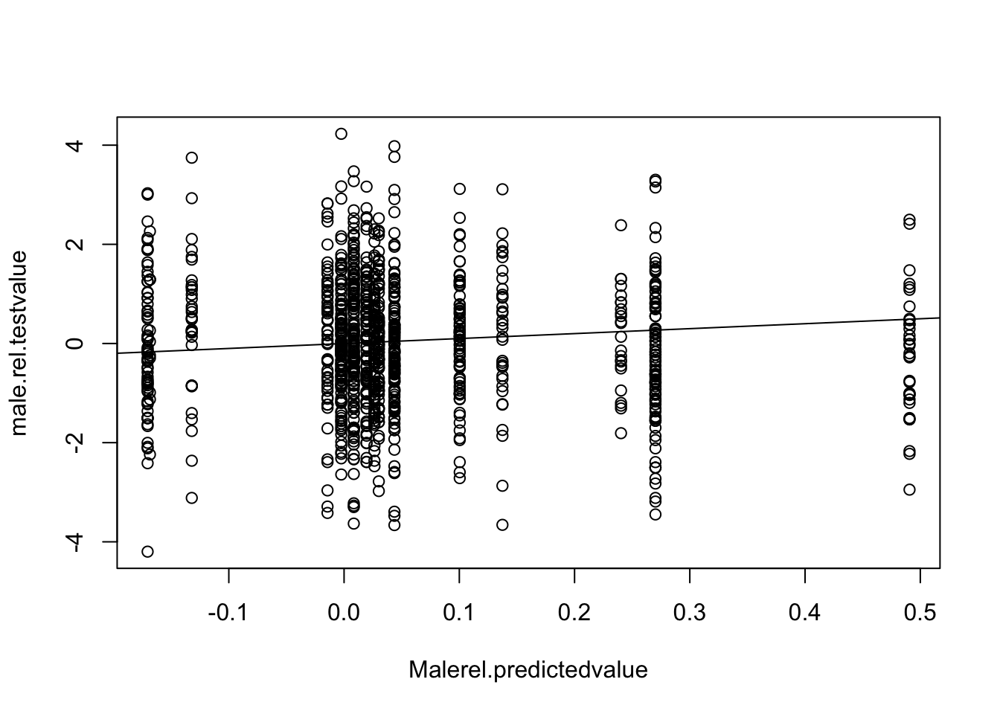
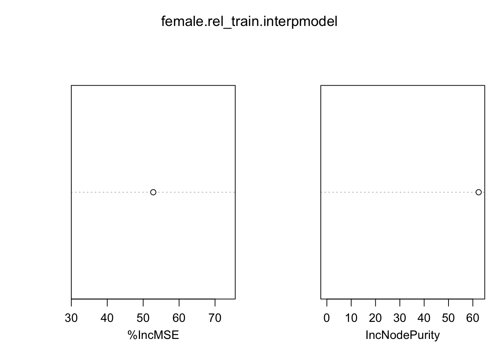
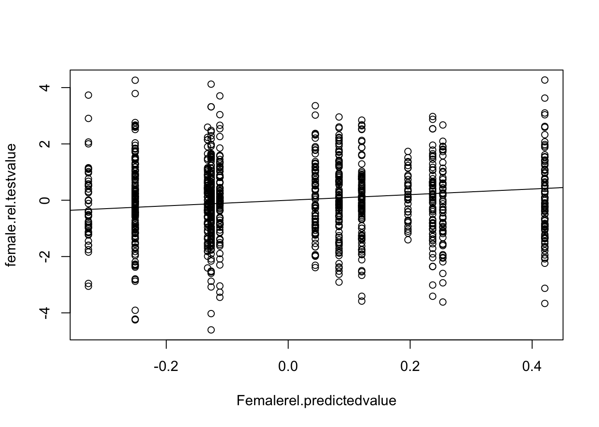

#Install required packages
library(tree); library(randomForest); library(VSURF)randomForest 4.7-1.2Type rfNews() to see new features/changes/bug fixes.##########Actor, Grand-Mean-Centred###########
#VSURF analyses on training dataset (Sample A)
ActorGM_trainset <- read.csv(file="Training actor.csv", header=T)
set.seed(741)
ActorGM_trainset_VSURF <- VSURF(DiggingActorGM~., data=ActorGM_trainset, na.action=na.omit, parallel=T, ntree=5000)Thresholding step
Estimated computational time (on one core): 11.9 sec.
Interpretation step (on 14 variables)
Estimated computational time (on one core): between 0.6 sec. and 2.5 sec.
Prediction step (on 8 variables)
Maximum estimated computational time (on one core): 0.9 sec.
|
| | 0%
|
|========= | 12%
|
|================== | 25%
|
|========================== | 38%
|
|=================================== | 50%
|
|============================================ | 62%
|
|==================================================== | 75%
|
|============================================================= | 88%
|
|======================================================================| 100%Warning in VSURF.formula(DiggingActorGM ~ ., data = ActorGM_trainset, na.action = na.omit, : VSURF with a formula-type call outputs selected variables
which are indices of the input matrix based on the formula:
you may reorder these to get indices of the original datasummary(ActorGM_trainset_VSURF)
VSURF computation time: 4.6 secs
VSURF selected:
14 variables at thresholding step (in 3.3 secs)
8 variables at interpretation step (in 0.7 secs)
4 variables at prediction step (in 0.6 secs)
VSURF ran in parallel on a PSOCK cluster and used 7 cores ActorGM_trainset_VSURF$varselect.interp[1] 69 30 36 87 12 65 54 59ncol(ActorGM_trainset)[1] 88###Actual value of ActorGM DV in test dataset (Sample B)
ActorGM_testset <- read.csv(file="Testing actor.csv", header=T)
ActorGM.testvalue <- ActorGM_testset$DiggingActorGM
####Actor training/testing
ActorGM_train.interpdata <- ActorGM_trainset[c(69,36,30,87,65,54,12,59,28,18,88)]
set.seed(605)
ActorGM_train.interpmodel <- randomForest(DiggingActorGM~., data=ActorGM_train.interpdata, importance=T, na.action=na.omit, parallel=T, ntree=5000)
ActorGM_train.interpmodel
Call:
randomForest(formula = DiggingActorGM ~ ., data = ActorGM_train.interpdata, importance = T, parallel = T, ntree = 5000, na.action = na.omit)
Type of random forest: regression
Number of trees: 5000
No. of variables tried at each split: 3
Mean of squared residuals: 0.8886045
% Var explained: 14.68importance(ActorGM_train.interpmodel) %IncMSE IncNodePurity
RejectionSen 16.733203 15.77221
Init1 9.293927 13.48731
FourminWarm 12.498206 16.05103
YouInt_1 9.716001 17.50338
Promotion 6.169303 16.06258
Ludus 19.597938 14.19618
Avoidance 8.566361 15.52256
NeedBelong 17.553055 17.03519
FourminpLiked 5.894721 13.39292
Desperation 13.290930 13.67053varImpPlot(ActorGM_train.interpmodel)
#Predicted value of Actor DV in test dataset, based on interpretation model created with training set
Actor.predictedvalue <- predict(ActorGM_train.interpmodel, newdata=ActorGM_testset)
#Correlated at .19
cor.test(Actor.predictedvalue, ActorGM.testvalue)
Pearson's product-moment correlation
data: Actor.predictedvalue and ActorGM.testvalue
t = 2.6789, df = 182, p-value = 0.008063
alternative hypothesis: true correlation is not equal to 0
95 percent confidence interval:
0.05156438 0.33013174
sample estimates:
cor
0.1947725 plot(Actor.predictedvalue, ActorGM.testvalue)
abline(0,1)
#Test MSE
compare.ActorGM <- data.frame(Actor.predictedvalue, ActorGM.testvalue)
compare.ActorGM <- na.omit(compare.ActorGM)
mean((compare.ActorGM$Actor.predictedvalue- compare.ActorGM$ActorGM.testvalue)^2)[1] 0.879307####Partner, Grand-Mean-Centred########
#VSURF analyses on training dataset (Sample A)
PartnerGM_trainset <- read.csv(file="Training partner.csv", header=T)
set.seed(853)
PartnerGM_trainset_VSURF <- VSURF(DiggingPartnerGM~., data=PartnerGM_trainset, na.action=na.omit, parallel=T, ntree=5000)Thresholding step
Estimated computational time (on one core): 10.8 sec.
Interpretation step (on 24 variables)
Estimated computational time (on one core): between 1.9 sec. and 6.7 sec.
Prediction step (on 8 variables)
Maximum estimated computational time (on one core): 0.9 sec.
|
| | 0%
|
|========= | 12%
|
|================== | 25%
|
|========================== | 38%
|
|=================================== | 50%
|
|============================================ | 62%
|
|==================================================== | 75%
|
|============================================================= | 88%
|
|======================================================================| 100%Warning in VSURF.formula(DiggingPartnerGM ~ ., data = PartnerGM_trainset, : VSURF with a formula-type call outputs selected variables
which are indices of the input matrix based on the formula:
you may reorder these to get indices of the original datasummary(PartnerGM_trainset_VSURF)
VSURF computation time: 4.9 secs
VSURF selected:
24 variables at thresholding step (in 3 secs)
8 variables at interpretation step (in 1.3 secs)
6 variables at prediction step (in 0.7 secs)
VSURF ran in parallel on a PSOCK cluster and used 7 cores PartnerGM_trainset_VSURF$varselect.interp[1] 80 8 55 20 28 3 52 81ncol(PartnerGM_trainset)[1] 88###Actual value of PartnerGM DV in test dataset (Sample B)
PartnerGM_testset <- read.csv(file="Testing partner.csv", header=T)
PartnerGM.testvalue <- PartnerGM_testset$DiggingPartnerGM
####Partner training/testing
PartnerGM_train.interpdata <- PartnerGM_trainset[c(80,8,55,20,3,52,81,60,28,69,49,23,72,88)]
set.seed(605)
PartnerGM_train.interpmodel <- randomForest(DiggingPartnerGM~., data=PartnerGM_train.interpdata, importance=T, na.action=na.omit, parallel=T, ntree=5000)
PartnerGM_train.interpmodel
Call:
randomForest(formula = DiggingPartnerGM ~ ., data = PartnerGM_train.interpdata, importance = T, parallel = T, ntree = 5000, na.action = na.omit)
Type of random forest: regression
Number of trees: 5000
No. of variables tried at each split: 4
Mean of squared residuals: 1.315375
% Var explained: 21.52importance(PartnerGM_train.interpmodel) %IncMSE IncNodePurity
SocioCount 50.309284 43.81885
ASPhysHot 20.869768 23.54983
MateValue 14.494771 20.82406
Extraversion 9.668401 19.16426
Anxious 10.910368 13.46381
Locomotion 9.043232 17.59972
SocioScale 15.967176 22.14155
Neurotic 9.267685 18.33404
FourminpLiked 6.559470 18.66857
RejectionSen 7.916061 14.30825
ISPhysHot 5.921866 12.43429
FourminDom 12.721708 16.70993
SatPeop 5.761245 12.07960varImpPlot(PartnerGM_train.interpmodel)
#Predicted value of Partner DV in test dataset, based on interpretation model created with training set
Partner.predictedvalue <- predict(PartnerGM_train.interpmodel, newdata=PartnerGM_testset)
#Correlated at .26
cor.test(Partner.predictedvalue, PartnerGM.testvalue)
Pearson's product-moment correlation
data: Partner.predictedvalue and PartnerGM.testvalue
t = 3.5551, df = 180, p-value = 0.0004827
alternative hypothesis: true correlation is not equal to 0
95 percent confidence interval:
0.1149716 0.3871740
sample estimates:
cor
0.2561436 plot(Partner.predictedvalue, PartnerGM.testvalue)
abline(0,1)
#Test MSE
compare.PartnerGM <- data.frame(Partner.predictedvalue, PartnerGM.testvalue)
compare.PartnerGM <- na.omit(compare.PartnerGM)
mean((compare.PartnerGM$Partner.predictedvalue- compare.PartnerGM$PartnerGM.testvalue)^2)[1] 1.263568####Dyadic Predicting Male Choice, Grand-Mean-Centred########
#VSURF analyses, Dyadic Male Sample A
male.rel_trainset <- read.csv(file="Training couples, male DV.csv", header=T)
set.seed(741)
male.rel_trainset_VSURF <- VSURF(DiggingRel~., data=male.rel_trainset, na.action=na.omit, parallel=T, ntree=5000)Thresholding step
Estimated computational time (on one core): 255.3 sec.
Interpretation step (on 1 variables)
Estimated computational time (on one core): between 0.2 sec. and 0.2 sec.
Prediction step (on 1 variables)
Maximum estimated computational time (on one core): 0.2 sec.
|
| | 0%Warning in VSURF_pred.default(x = x, y = y, ntree.pred = ntree.pred, err.interp = interp$err.interp, : Unable to perform prediction step, because the interpretation step
did not eliminate variablesWarning in VSURF.formula(DiggingRel ~ ., data = male.rel_trainset, na.action = na.omit, : VSURF with a formula-type call outputs selected variables
which are indices of the input matrix based on the formula:
you may reorder these to get indices of the original datasummary(male.rel_trainset_VSURF)
VSURF computation time: 1.1 mins
VSURF selected:
1 variables at thresholding step (in 1.1 mins)
1 variables at interpretation step (in 0.5 secs)
0 variables at prediction step (in 0.1 secs)
VSURF ran in parallel on a PSOCK cluster and used 7 cores male.rel_trainset_VSURF$varselect.interp[1] 40ncol(male.rel_trainset)[1] 173###Actual value of male.rel DV in test dataset (Sample B)
male.rel_testset <- read.csv(file="Testing couples, male DV.csv", header=T)
male.rel.testvalue <- male.rel_testset$DiggingRel
####Male dyadic training/testing
male.rel_train.interpdata <- male.rel_trainset[c(40,173)]
set.seed(605)
male.rel_train.interpmodel <- randomForest(DiggingRel~., data=male.rel_train.interpdata, importance=T, na.action=na.omit, parallel=T, ntree=5000)
male.rel_train.interpmodel
Call:
randomForest(formula = DiggingRel ~ ., data = male.rel_train.interpdata, importance = T, parallel = T, ntree = 5000, na.action = na.omit)
Type of random forest: regression
Number of trees: 5000
No. of variables tried at each split: 1
Mean of squared residuals: 1.857124
% Var explained: -2.21importance(male.rel_train.interpmodel) %IncMSE IncNodePurity
FExtraversion -33.10341 40.68532varImpPlot(male.rel_train.interpmodel)
#Predicted value of Male Dyadic DV in test dataset, based on interpretation model created with training set
Malerel.predictedvalue <- predict(male.rel_train.interpmodel, newdata=male.rel_testset)
#Correlated at -.06
cor.test(Malerel.predictedvalue, male.rel.testvalue)
Pearson's product-moment correlation
data: Malerel.predictedvalue and male.rel.testvalue
t = -2.0214, df = 1078, p-value = 0.04348
alternative hypothesis: true correlation is not equal to 0
95 percent confidence interval:
-0.120659686 -0.001804783
sample estimates:
cor
-0.06145007 plot(Malerel.predictedvalue, male.rel.testvalue)
abline(0,1)
#Test MSE
compare.male.rel <- data.frame(Malerel.predictedvalue, male.rel.testvalue)
compare.male.rel <- na.omit(compare.male.rel)
mean((compare.male.rel$Malerel.predictedvalue- compare.male.rel$male.rel.testvalue)^2)[1] 1.682059####Dyadic Predicting Female Choice, Grand-Mean-Centred########
#VSURF analyses, Dyadic Female Sample A
female.rel_trainset <- read.csv(file="Training couples, female DV.csv", header=T)
set.seed(741)
female.rel_trainset_VSURF <- VSURF(FDiggingrel~., data=female.rel_trainset, na.action=na.omit, parallel=T, ntree=5000)Thresholding step
Estimated computational time (on one core): 244.9 sec.
Interpretation step (on 6 variables)
Estimated computational time (on one core): between 1.5 sec. and 4.8 sec.
Prediction step (on 1 variables)
Maximum estimated computational time (on one core): 0.2 sec.
|
| | 0%
|
|======================================================================| 100%Warning in VSURF.formula(FDiggingrel ~ ., data = female.rel_trainset, na.action = na.omit, : VSURF with a formula-type call outputs selected variables
which are indices of the input matrix based on the formula:
you may reorder these to get indices of the original datasummary(female.rel_trainset_VSURF)
VSURF computation time: 1.1 mins
VSURF selected:
6 variables at thresholding step (in 1 mins)
1 variables at interpretation step (in 1.3 secs)
1 variables at prediction step (in 0.3 secs)
VSURF ran in parallel on a PSOCK cluster and used 7 cores female.rel_trainset_VSURF$varselect.interp[1] 169ncol(female.rel_trainset)[1] 173###Actual value of female.rel DV in test dataset (Sample B)
female.rel_testset <- read.csv(file="Testing couples, female DV.csv", header=T)
female.rel.testvalue <- female.rel_testset$FDiggingRel
####female dyadic training/testing
female.rel_train.interpdata <- female.rel_trainset[c(171,173)]
set.seed(605)
female.rel_train.interpmodel <- randomForest(FDiggingrel~., data=female.rel_train.interpdata, importance=T, na.action=na.omit, parallel=T, ntree=5000)
female.rel_train.interpmodel
Call:
randomForest(formula = FDiggingrel ~ ., data = female.rel_train.interpdata, importance = T, parallel = T, ntree = 5000, na.action = na.omit)
Type of random forest: regression
Number of trees: 5000
No. of variables tried at each split: 1
Mean of squared residuals: 2.067366
% Var explained: -0.57importance(female.rel_train.interpmodel) %IncMSE IncNodePurity
Traditional 52.80729 62.40226varImpPlot(female.rel_train.interpmodel)
#Predicted value of female Dyadic DV in test dataset, based on interpretation model created with training set
Femalerel.predictedvalue <- predict(female.rel_train.interpmodel, newdata=female.rel_testset)
#Correlated at .02
cor.test(Femalerel.predictedvalue, female.rel.testvalue)
Pearson's product-moment correlation
data: Femalerel.predictedvalue and female.rel.testvalue
t = 0.55317, df = 1078, p-value = 0.5803
alternative hypothesis: true correlation is not equal to 0
95 percent confidence interval:
-0.04284947 0.07642060
sample estimates:
cor
0.01684549 plot(Femalerel.predictedvalue, female.rel.testvalue)
abline(0,1)
#Test MSE
compare.female.rel <- data.frame(Femalerel.predictedvalue, female.rel.testvalue)
compare.female.rel <- na.omit(compare.female.rel)
mean((compare.female.rel$Femalerel.predictedvalue- compare.female.rel$female.rel.testvalue)^2)[1] 1.754859